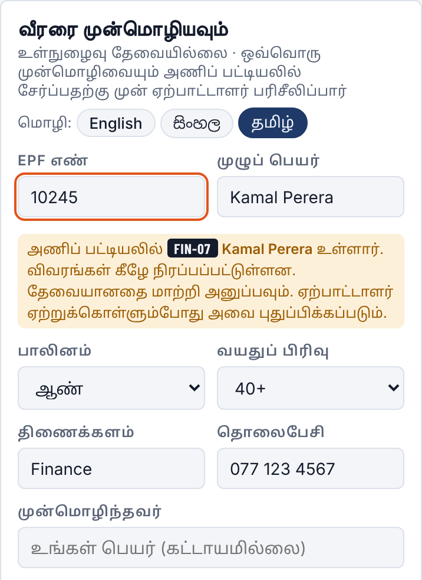
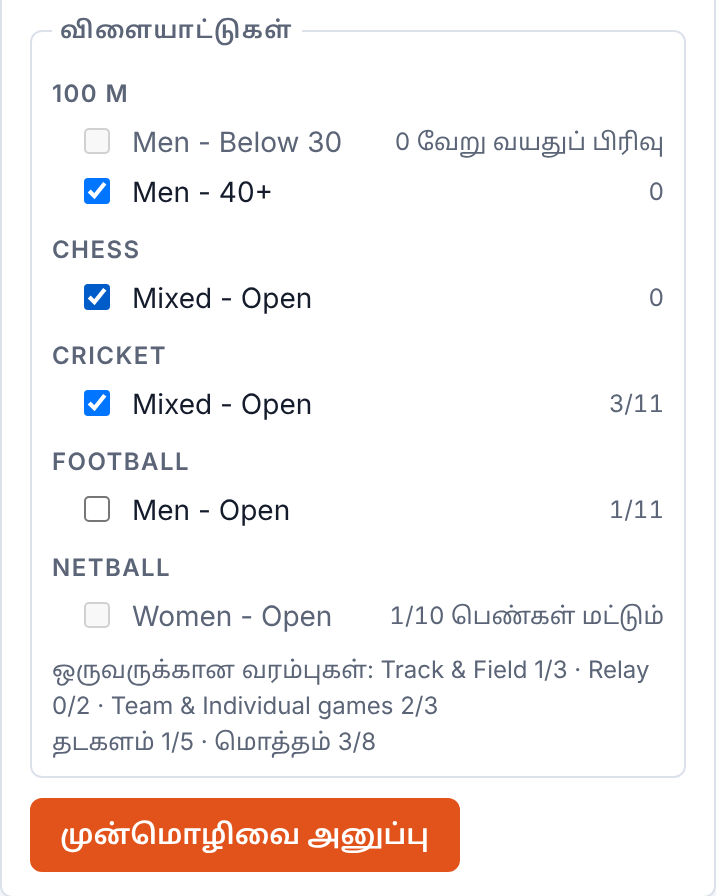
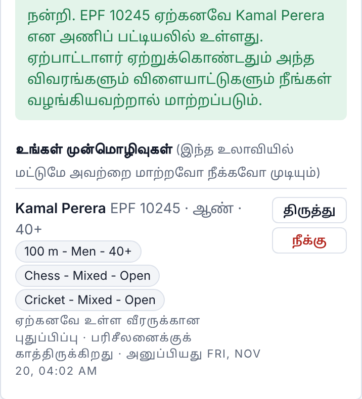
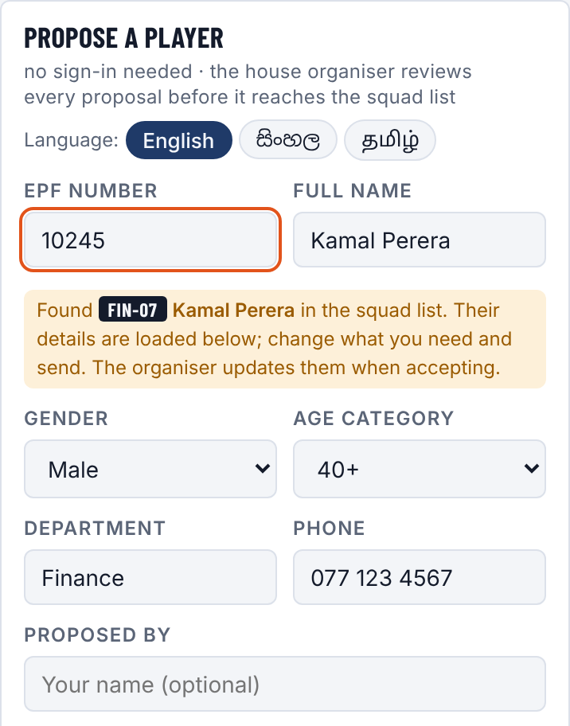
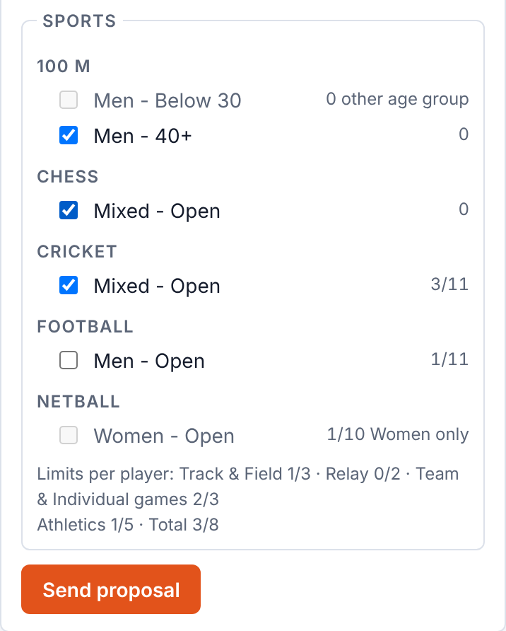

திணைக்களங்களுக்கிடையிலான விளையாட்டு விழா · உள்நுழைவோ கடவுச்சொல்லோ தேவையில்லை
இந்த இணைப்பைத் திறக்கவும்
pmendis.github.io/pmendis
உள்நுழைவு தேவையில்லை
உங்கள் கைபேசியில் மேலே உள்ள இணைப்பைத் திறக்கவும். Propose பக்கம் முதலில் திறக்கும். படிவத்தின் மேலே உள்ள தமிழ் பொத்தானை அழுத்தி மொழியைத் தெரிவு செய்யவும்.
முதலில் உங்கள் EPF எண்ணை உள்ளிடவும். நீங்கள் ஏற்கனவே பட்டியலில் இருந்தால், உங்கள் விவரங்கள் தானாக நிரப்பப்படும். மாற்ற வேண்டியவற்றை மட்டும் மாற்றவும்.
முழுப் பெயர், பாலினம் (Gender), வயதுப் பிரிவு (Age category) ஆகியவற்றை உள்ளிடவும். இவை கட்டாயமானவை. உங்கள் திணைக்களம் மற்றும் தொலைபேசி எண்ணையும் சேர்க்கவும்.
நீங்கள் பங்கேற்க விரும்பும் விளையாட்டுகளைத் தெரிவு செய்யவும் (tick). சாம்பல் நிறத்தில் உள்ளவை உங்கள் வயதுப் பிரிவு அல்லது பாலினத்திற்குப் பொருந்தாதவை, அல்லது அந்த அணி ஏற்கனவே நிரம்பியுள்ளது.
Track & Field அதிகபட்சம் 3Relay அதிகபட்சம் 2மற்ற அணி/தனிநபர் விளையாட்டுகள் அதிகபட்சம் 3
முன்மொழிவை அனுப்பு பொத்தானை அழுத்தவும். உங்கள் முன்மொழிவு கிடைத்ததாக ஒரு செய்தி தோன்றும்.
உங்கள் முன்மொழிவு உங்கள் முன்மொழிவுகள் என்பதன் கீழ் தெரியும். ஏற்பாட்டாளர் பரிசீலிக்கும் வரை திருத்து மூலம் மாற்றலாம் அல்லது நீக்கு மூலம் நீக்கலாம்.
ஏற்பாட்டாளர் ஏற்றுக்கொண்டதும் உங்கள் பெயர் அணிப் பட்டியலில் Proposed எனச் சேர்க்கப்படும். இறுதி அணிக்குத் தெரிவானால் Confirmed எனக் குறிக்கப்படும்.
தமிழ்
Inter-Department Sports Festival
விளையாட்டுகளுக்கு உங்கள் பெயரை முன்மொழிவது எப்படி

படி 2 · EPF உள்ளிட்டதும் விவரங்கள் நிரம்பும்

படி 4–5 · விளையாட்டுகளைத் தெரிவு செய்து அனுப்பவும்

படி 6 · உங்கள் முன்மொழிவுகள்
கவனிக்க வேண்டியவை
பின்னர் முன்மொழிவை மாற்ற அதே கைபேசியையும் அதே உலாவியையும் பயன்படுத்தவும். Incognito / Private சாளரத்தைப் பயன்படுத்த வேண்டாம்.
ஒரே EPF எண்ணுக்கு மீண்டும் முன்மொழியத் தேவையில்லை. EPF எண்ணை உள்ளிட்டதும் உங்கள் முந்தைய முன்மொழிவு திறக்கும்.
ஏதேனும் சிக்கல் இருந்தால் உங்கள் திணைக்கள விளையாட்டு ஏற்பாட்டாளரைத் தொடர்புகொள்ளவும்.
ENGLISH
Inter-Department Sports Festival
How to propose yourself for sports
Takes about two minutes · no login or password needed
Open this link
pmendis.github.io/pmendis
No login needed
Open the link above on your phone. The Propose page opens first. To read it in Sinhala or Tamil, tap සිංහල or தமிழ் at the top of the form.
Enter your EPF number first. If you are already on the list, your details fill in automatically. Change only what needs changing.
Enter your full name, gender and age category. These are required. Add your department and phone number too.
Tick the sports you want to take part in. Greyed-out sports don't match your age category or gender, or the team is already full.
Track & Field: up to 3Relay: up to 2Other team / individual sports: up to 3
Press Send proposal. A message confirms it was received.
Your proposal appears under Your proposals. Until the organiser reviews it, you can change it with Edit or remove it with Delete.
Once the organiser accepts it, your name joins the squad list as Proposed. If you are selected for the final squad, it is marked Confirmed.
ENGLISH
Inter-Department Sports Festival
How to propose yourself for sports

Step 2 · enter EPF, your details load

Steps 4–5 · tick sports and sendStep 6 · your proposals
Good to know
To change your proposal later, use the same phone and the same browser. Don't use an Incognito / Private window.
No need to propose the same EPF number twice. Entering it again opens your earlier proposal.
If something doesn't work, contact your department's sports organiser.